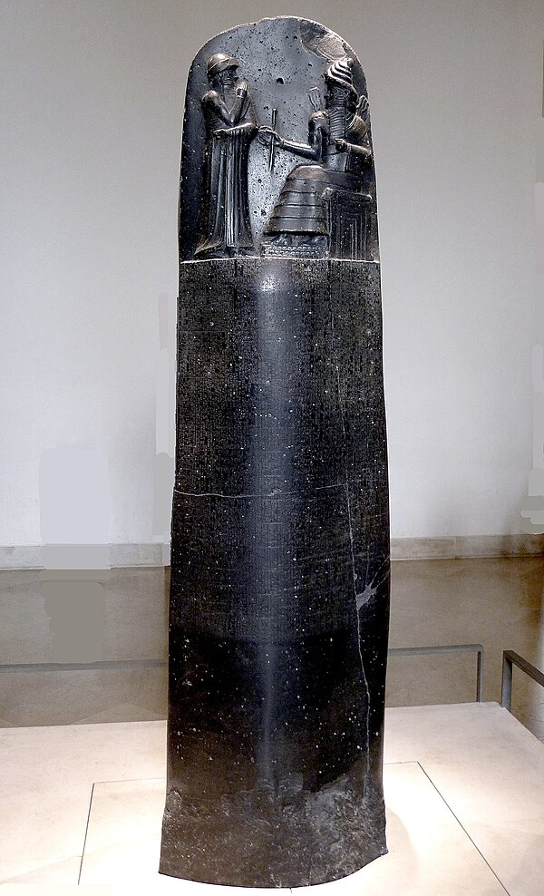
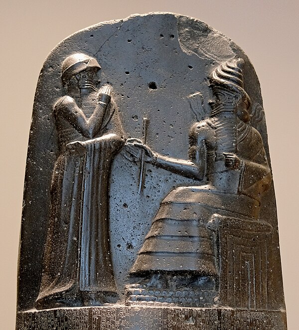
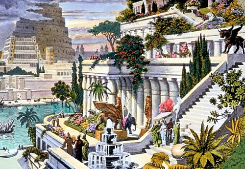
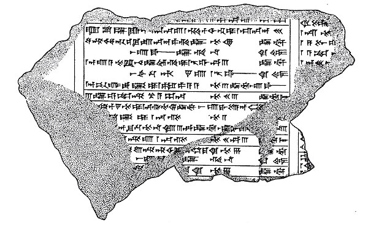
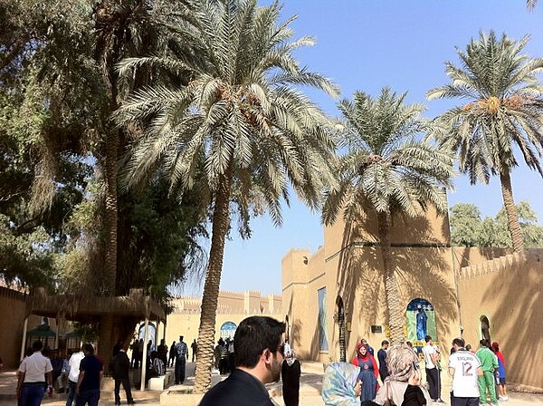
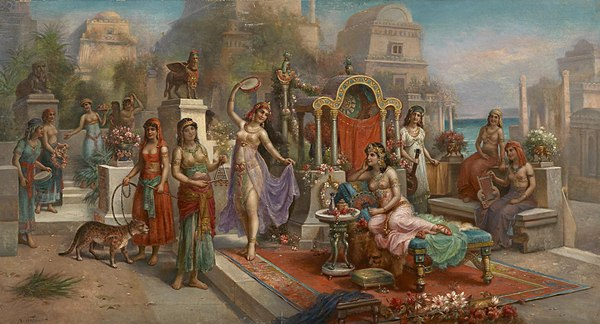

The magnificent blue-glazed brick gate of Babylon, decorated with dragons and bulls. Built by Nebuchadnezzar II, now reconstructed in Berlin's Pergamon Museum.

Code of Hammurabi
The 2.25-metre black diorite stele inscribed with 282 laws. Discovered in Susa in 1901, now in the Louvre, Paris. One of the oldest legal texts ever found.

Hammurabi & Shamash
Bas-relief from the top of the stele showing Hammurabi receiving the laws from Shamash, the sun god of justice. Divine authority underpins earthly law.

The Hanging Gardens
One of the Seven Wonders of the Ancient World, attributed to Nebuchadnezzar II. Terraced gardens rising above the Euphrates plain — a marvel of ancient engineering.

Cuneiform Chronicles
Clay tablets inscribed with wedge-shaped cuneiform script — the world's first writing system. Used to record trade, law, astronomy, and epic literature.

Babylon Today
The ruins of ancient Babylon near modern Hillah, Iraq. Once the world's largest city, these bricks still bear the stamp of Nebuchadnezzar II's name.

The Gardens of Semiramis
Romantic 19th-century depiction of the legendary Hanging Gardens. Some historians believe they may have actually been in Nineveh rather than Babylon.